רקע אפור מאחורי הדמות
הדמות הלבנה על רקע לבן לא בולטת. כאן הדמות של כל 18 התמונות נחתכה במודל להסרת רקע (חינם, רץ אצלנו) והונחה על אפור אחיד, בלי הילה ובלי שוליים קרועים. הגוף והשריר לא נגעו. כל אפשרות מוצגת כמו בבוחר באפליקציה, ומתחתיה שלוש תמונות בגודל מלא.
א · אפור בהיר קרוב לאפליקציה, הדמות בולטת בעדינות.
פלג גוף עליון
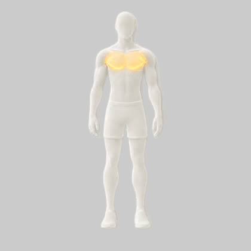
חזה 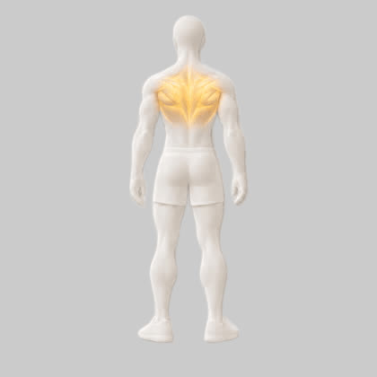
מעוינים וטרפז אמצעי 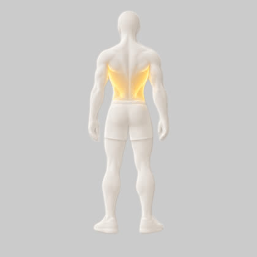
רחב גבי 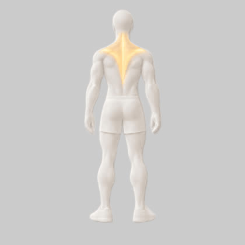
טרפז עליון 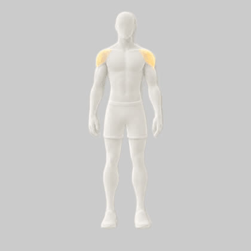
כתפיים 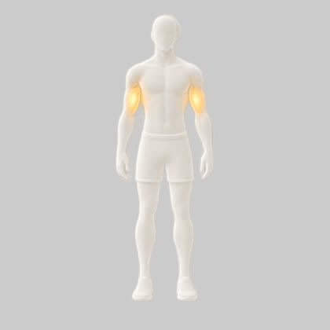
יד קדמית 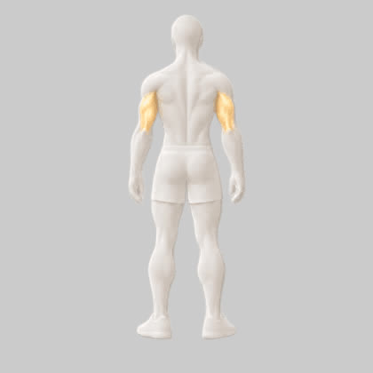
יד אחורית 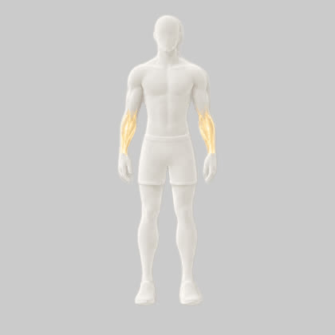
אמה פלג גוף תחתון
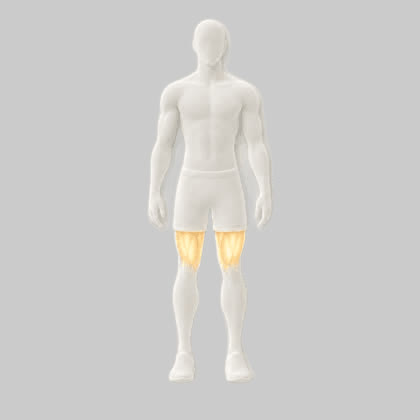
ארבע ראשי 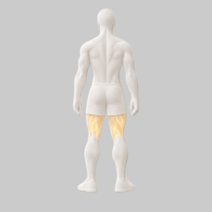
ירך אחורית 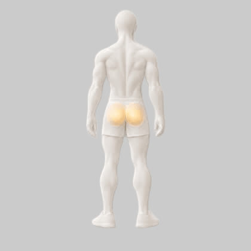
ישבן 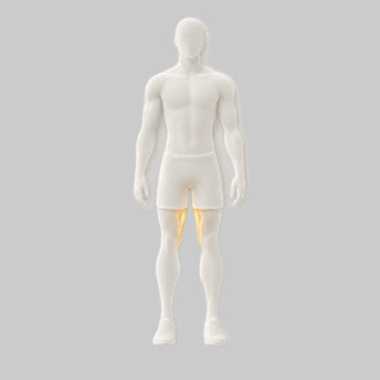
מקרבים 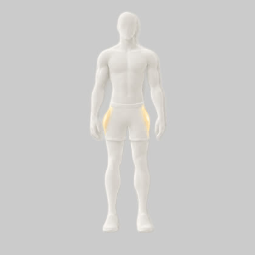
מרחיקים 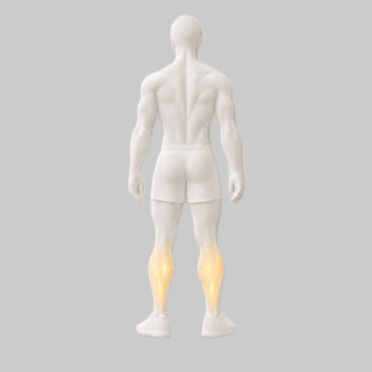
שוקיים מרכז הגוף ואחר
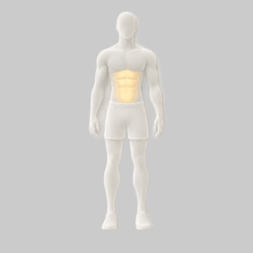
בטן 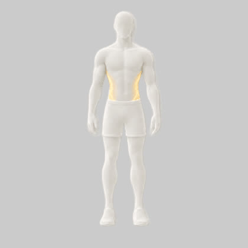
אלכסונים 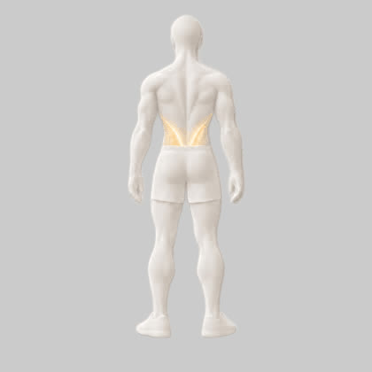
זוקפי גב 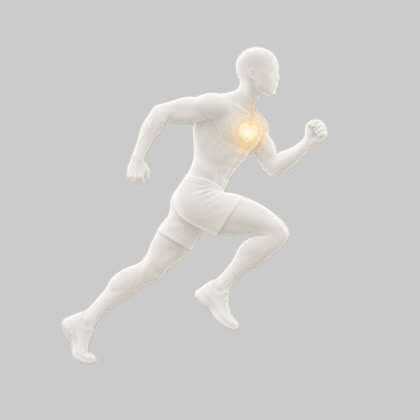
אירובי
ב · אפור בינוני הניגוד הכי חזק: הגוף הלבן והשריר הכי ברורים.
פלג גוף עליון
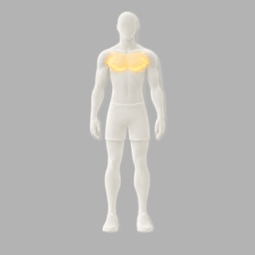
חזה 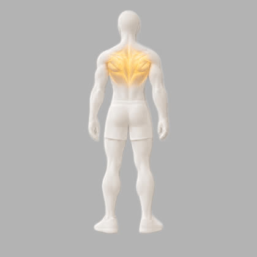
מעוינים וטרפז אמצעי 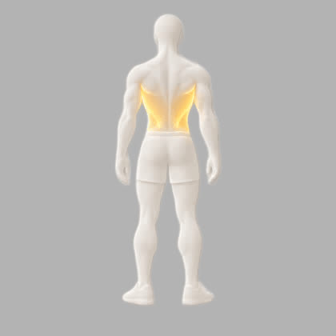
רחב גבי טרפז עליון 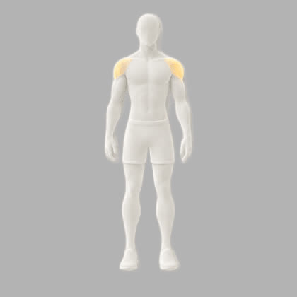
כתפיים 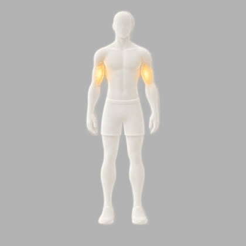
יד קדמית 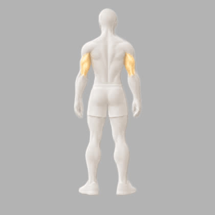
יד אחורית אמה פלג גוף תחתון
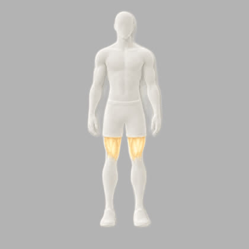
ארבע ראשי ירך אחורית ישבן מקרבים 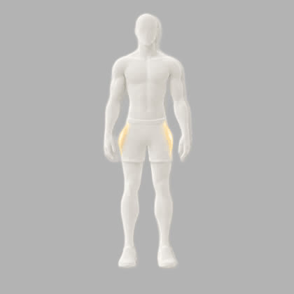
מרחיקים 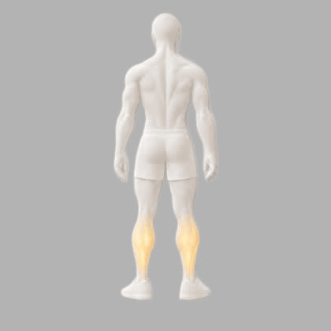
שוקיים מרכז הגוף ואחר
בטן 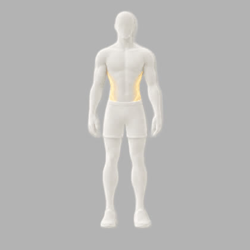
אלכסונים 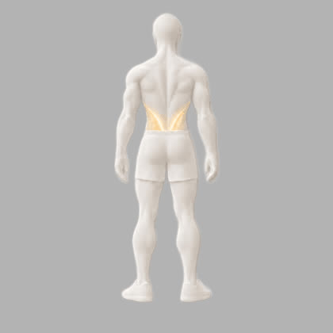
זוקפי גב 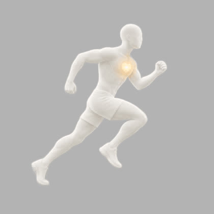
אירובי
מה שיש עכשיו ב-dev לבן על לבן, להשוואה.